{{ previewLabel }}
{{ openCaseData.client }}
{{ openCaseData.deck }}
{{ t.metaYear }}
{{ openCaseData.year }}
{{ t.metaTeam }}
{{ openCaseData.team }}
{{ t.metaRole }}
{{ openCaseData.role }}
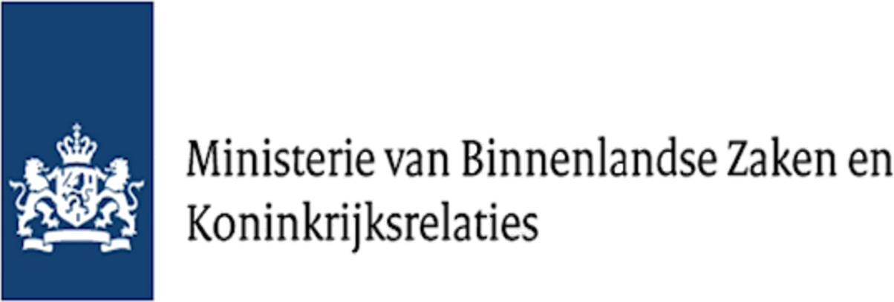
{{ openCaseData.typeCover }}
{{ p }}
{{ tile.title }}
{{ tile.body }}
{{ openCaseData.quote }}
{{ openCaseData.cite }}
{{ t.nextProject }}
{{ openCaseData.nextDeck }}{{ t.contact }}
{{ t.contactTitleLead }} {{ t.contactTitleRest }}
© Dirk Gooren · {{ year }}
{{ t.heroPre }}{{ t.heroMark }}{{ t.heroPost1 }}{{ t.heroSqueeze }}{{ t.heroPost3 }}
{{ t.featured }}
{{ t.trustedBy }}
{{ t.about }}
{{ t.aboutTitle }}
{{ t.aboutP1 }}
{{ s.value }}
{{ s.label }}
{{ h.title }}
{{ h.body }}
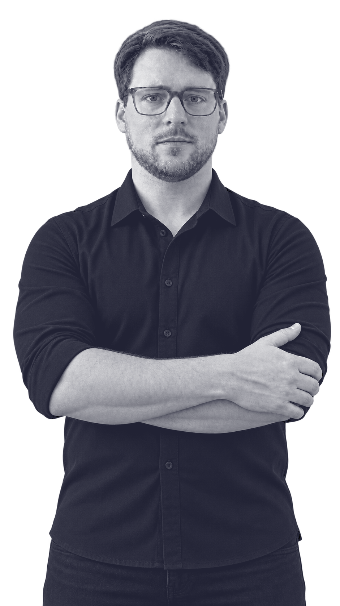
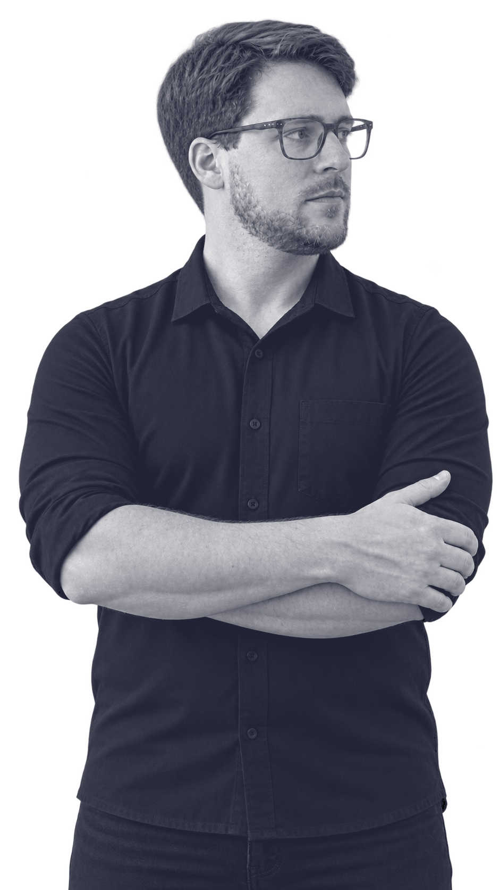
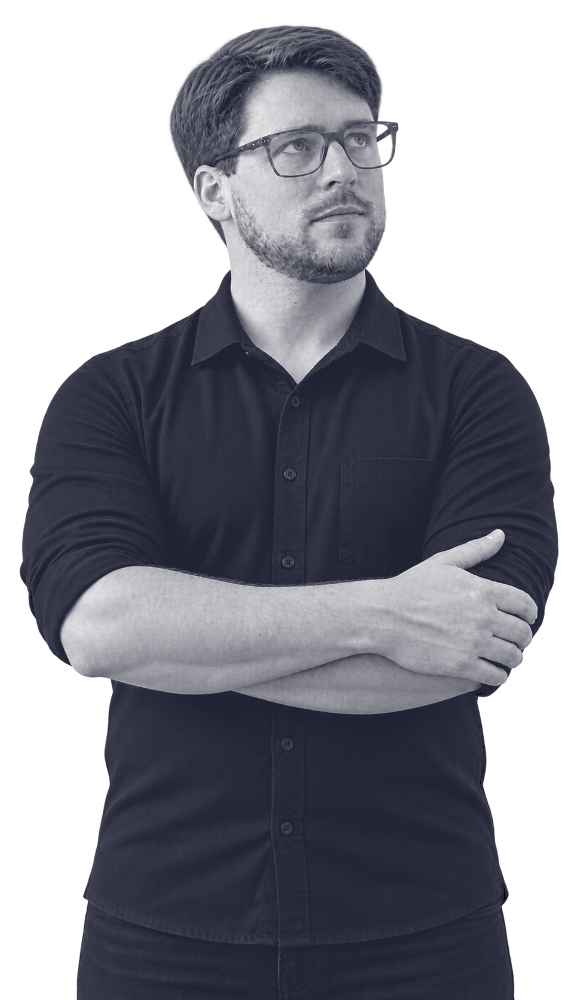
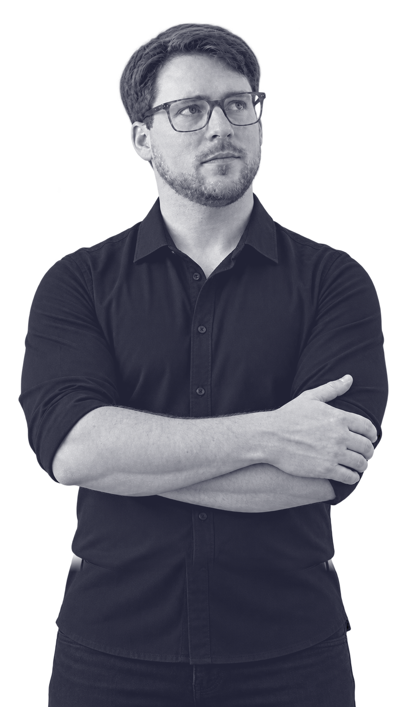
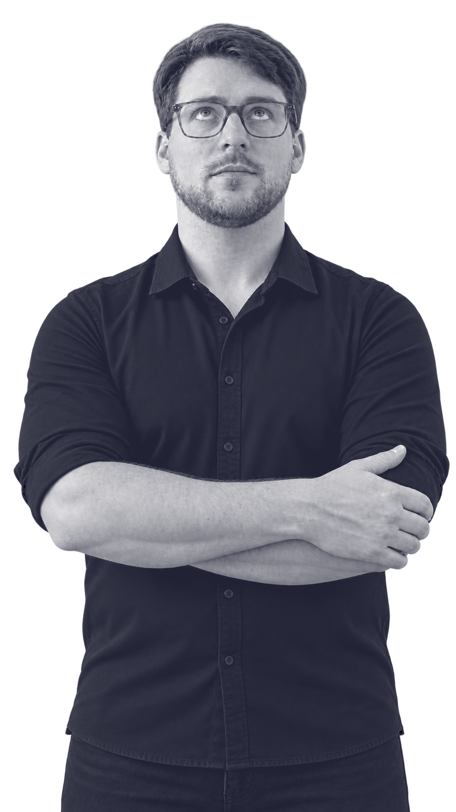
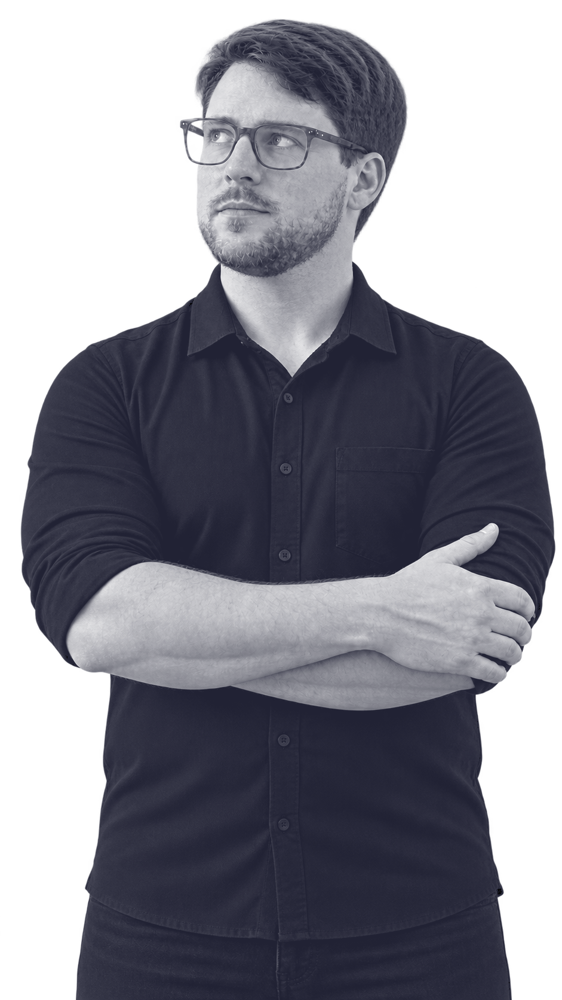
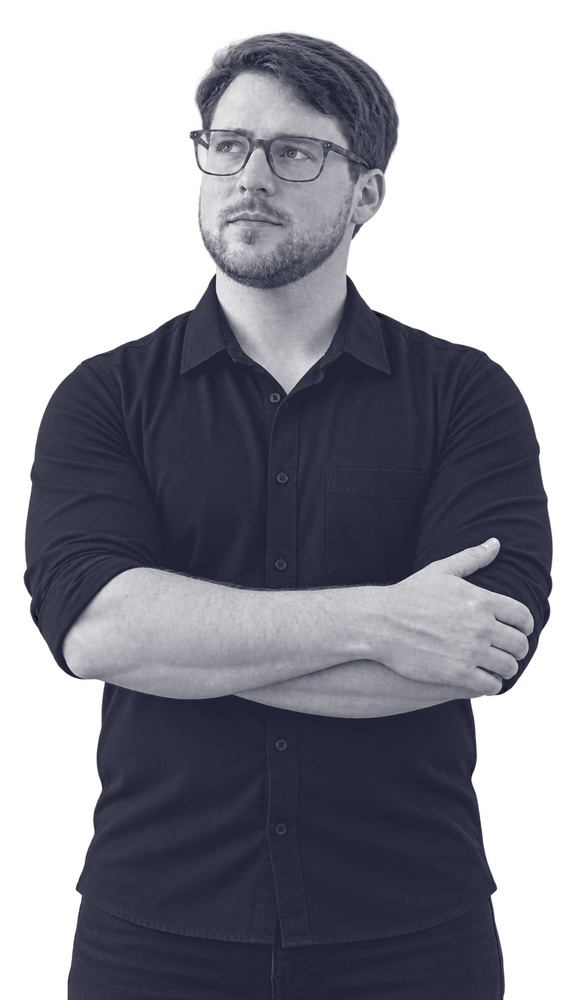
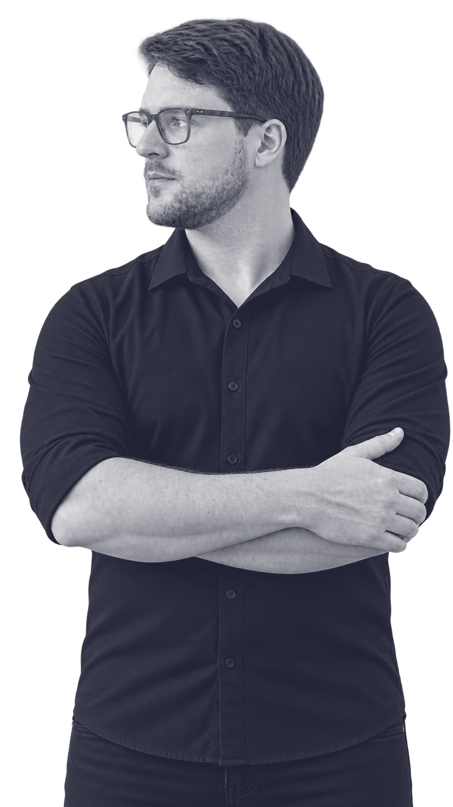
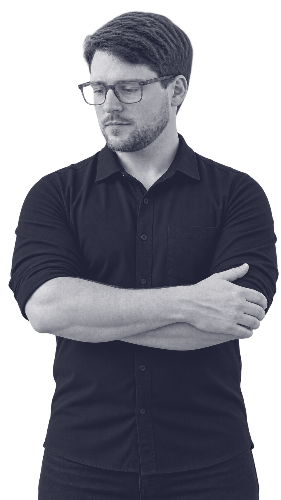
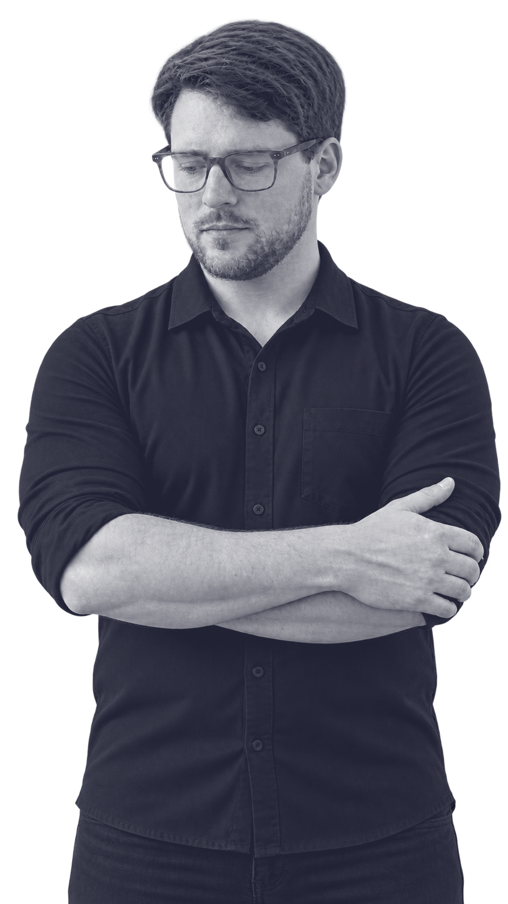
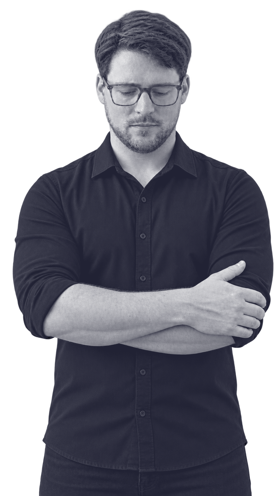
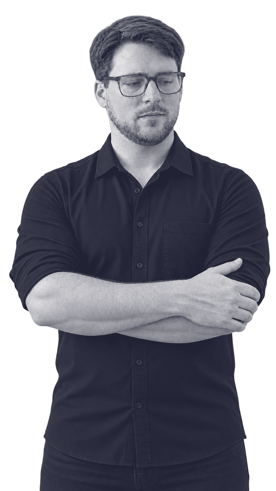
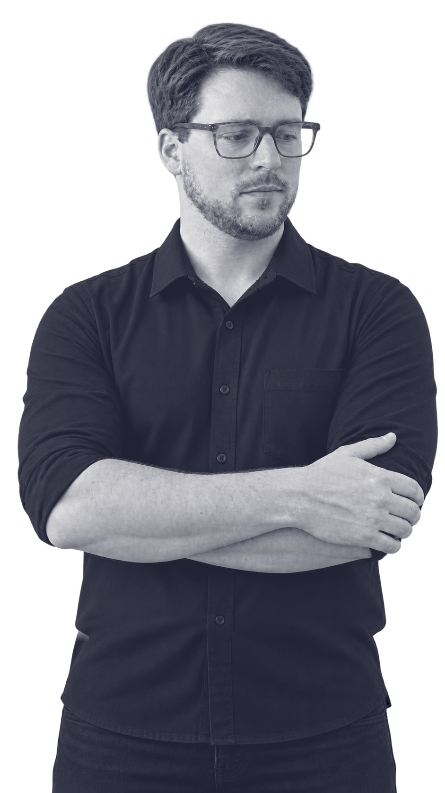
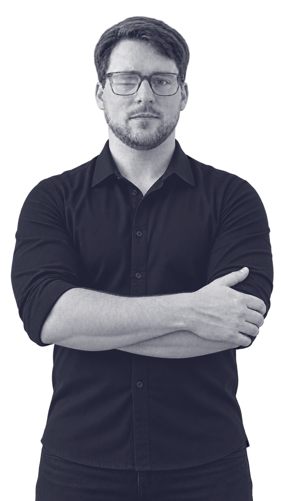
{{ t.services }}
{{ t.servicesTitle }}
{{ s.title }}
{{ s.head }}
{{ t.contact }}
{{ t.contactTitleLead }} {{ t.contactTitleRest }}
© Dirk Gooren · {{ year }}